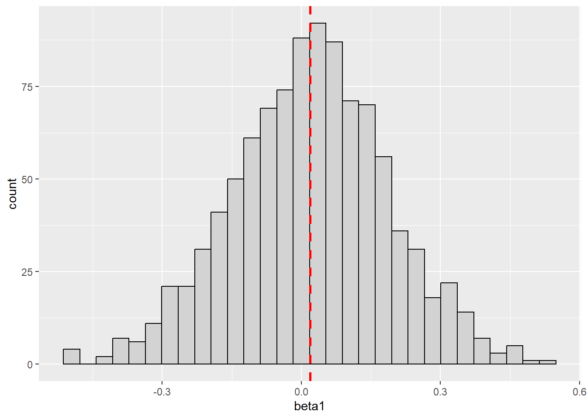
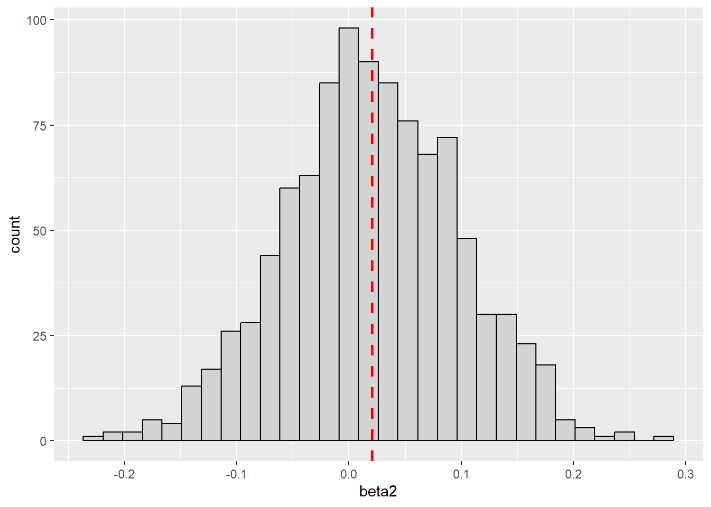
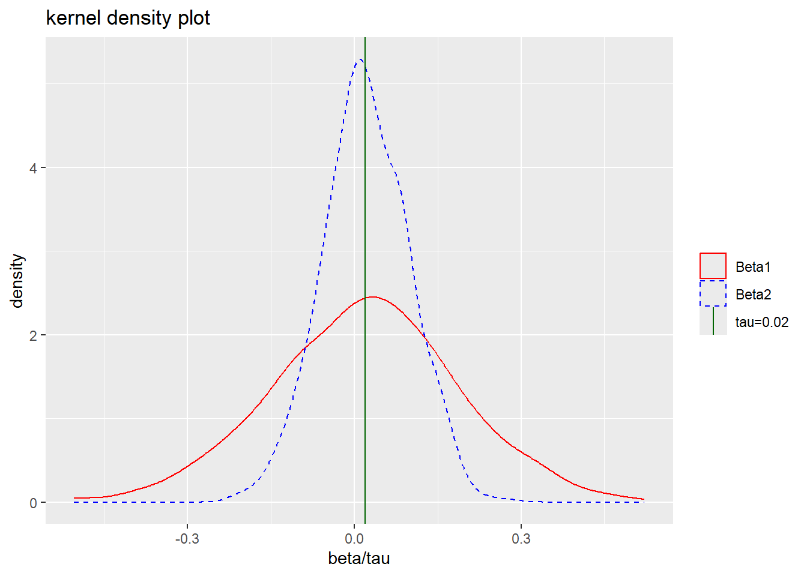
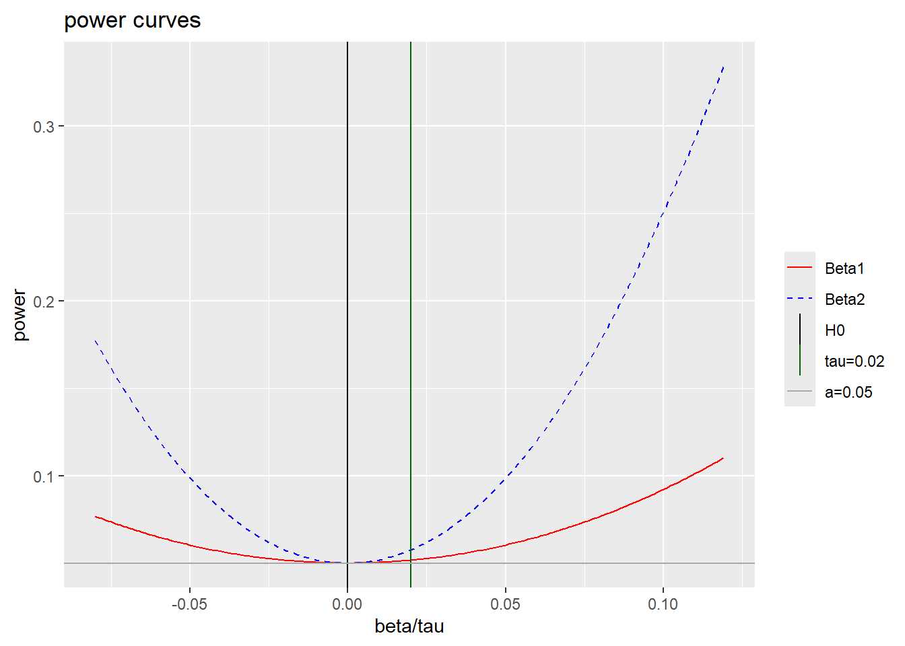
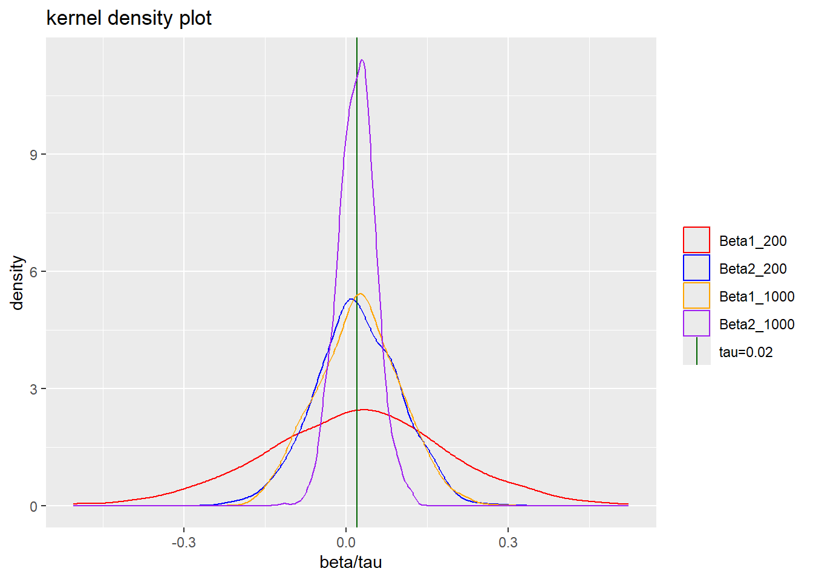
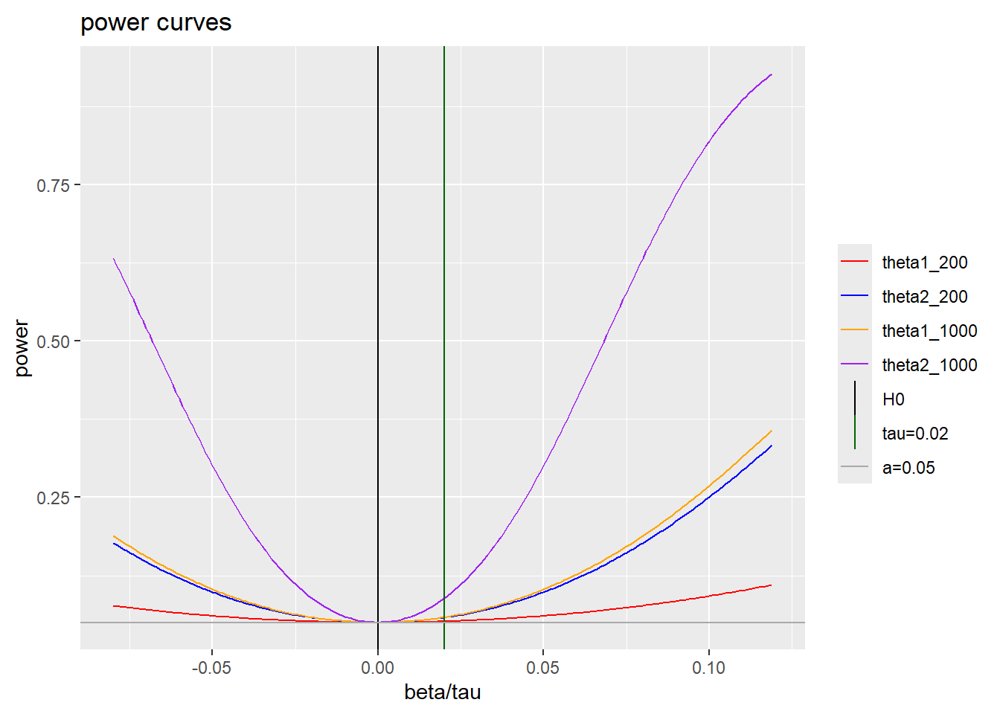

library(tidyverse)
library(modelsummary)
library(tinytable)
library(psych)Power Calculations and Simulations
Required R Packages
Learning Objectives
In this seminar you will learn how to:
make an a priori power calculation for an experiment;
simulate an experiment in R/Stata;
and visualize the properties of the power function.
Motivation
Statistical power is an valuable theoretical and practical concept. The power of a test is the probability of rejecting the null hypothesis when the alternative hypothesis is true.
Let’s consider the simple null hypothesis of no average treatment effect,1
\[ H_0: \tau_{ATE} = 0 \]
When testing this null hypothesis against the alternative,
\[ H_1: \tau_{ATE} \neq 0 \]
the set of values that fulfill the alternative hypothesis is any value on the real line, excluding 0.
The power of this test is,
\[ Pr\big(\text{Reject }H_0|H_1\text{ is true}\big) = Pr\big(\text{Reject }H_0|\tau_{ATE} = \tau_0; \tau_0\neq 0\big) \]
When do we reject \(H_0\)? A valid test is defined by a rejection rule based on a test static and a corresponding critical value. For example, in this two-sided test,
\[ \text{Reject }H_0\text{ if}\qquad \bigg| \frac{\hat{\tau}}{se(\hat{\tau})}\bigg|>z_{1-\alpha/2} \]
In statistical inference there is a trade off between Type I and II errors. We limit Type I erros - probability of rejecting \(H_0\) when \(H_0\) is true - through the choice of \(\alpha\): the significance level. In Economics, this is typically chosen to be 1%, 5%, or 10%.
\[ \alpha = Pr\big(\text{Reject }H_0|H_0\text{ is true}\big) \] A test is said to be of size \(\alpha\) if the probability of a Type I error is \(\leq \alpha\).
The finite sample distribution of this test statistic is not known as we do not know the distributions of \(\{Y(1),Y(0)\}\) upon which the test statistic is based.2 By the Central Limit Theorem, we know that the limiting distribution is standard normal under the null hypothesis. This is true only under \(H_0\). The CLT holds for the true mean of estimator (\(E[\hat{\tau}]=\tau_{ATE}\)), which we know under \(H_0\) to be \(0\).
Thus, under \(H_0\),
\[ \frac{\hat{\tau}}{se(\hat{\tau})} = \frac{\hat{\tau}-E[\hat{\tau}]}{se(\hat{\tau})} \overset{d}\longrightarrow N(0,1) \quad \text{as }n\rightarrow \infty \] For this reason, we can approximate the distribution of the test statistic with the standard normal.
\[ \frac{\hat{\tau}}{se(\hat{\tau})} \quad a.\thicksim N(0,1) \quad \text{under }H_0 \]
Exercise 1 Can you show that the size of this test is \(\alpha\) (as \(n\rightarrow \infty\))?
Unfortunatley, we cannot restrict the probability of both a Type I and II error. Here, we chose the critical values to give us a test of size \(\alpha\). By doing so, we give up the possibility of limiting the probability of a Type II error. Moreover, a smaller \(\alpha\) will necessarily imply a higher probability of Type II error.3
The probability of a Type II error depends on the power of the test.
\[ Pr\big(\text{Failing to reject }H_0|H_0\text{ is false}\big) = 1 - Pr\big(\text{Reject }H_0|H_1\text{ is true}\big) \]
A more powerful test has a lower probability of Type II error. Since, two tests might have the same size (i.e., \(\alpha\)) we strictly prefer the more powerful test. Power is therefore an important metric by which we can compare different tests.
For this test (\(H_0: \tau_{ATE}=0\)), the power of the test tells you how likely you are to detect a given non-zero average treatment effect in the experiment. Given how expensive it is to implement experiments (especially in Economics), this is useful information. There would be no point running a RCT if the likelihood of rejecting a null effect is very low.
Power calculation
In this setting, the power function tells you the probability of rejecting \(H_0\) for any true value of the ATE; denoted here by the scalar \(\tau_0\). For the above two-sided test, this is given by,
\[ \begin{aligned} \theta(\tau_0)=&Pr(\text{Reject }H_0|\tau_{ATE}=\tau_0) \\ =& Pr\left(\bigg|\frac{\hat{\tau}}{se(\hat{\tau})}\bigg|>z_{1-\alpha/2}\bigg|\tau_{ATE}=\tau_0\right) \\ =&Pr\left(\frac{\hat{\tau}}{se(\hat{\tau})}<z_{\alpha/2}\bigg|\tau_{ATE}=\tau_0\right)+Pr\left(\frac{\hat{\tau}}{se(\hat{\tau})}>z_{1-\alpha/2}\bigg|\tau_{ATE}=\tau_0\right) \\ =&Pr\left(\frac{\hat{\tau}-\tau_0}{se(\hat{\tau})}+\frac{\tau_0}{se(\hat{\tau})}<z_{\alpha/2}\bigg|\tau_{ATE}=\tau_0\right)+Pr\left(\frac{\hat{\tau}-\tau_0}{se(\hat{\tau})}+\frac{\tau_0}{se(\hat{\tau})}>z_{1-\alpha/2}\bigg|\tau_{ATE}=\tau_0\right) \\ \approx& Pr\left(Z<z_{\alpha/2}-\frac{\tau_0}{se(\hat{\tau})}\bigg|\tau_{ATE}=\tau_0\right)+Pr\left(Z>z_{1-\alpha/2}-\frac{\tau_0}{se(\hat{\tau})}\bigg|\tau_{ATE}=\tau_0\right) \end{aligned} \]
where \(Z\) is a standard normal random variable. The final equality is an approximation since we do not know the finite sample distribution of the test statistic.
Exercise 2 Given the above definition of the power function, what is \(\theta(0)\)?
To make further use of this function, we need to define \(\hat{\tau}\) and \(se(\hat{\tau})\). Consider,
\[ \begin{aligned} \hat{\tau} =& \frac{1}{N_t} \sum_{i:W_i=1}Y_i-\frac{1}{N_c} \sum_{i:W_i=0}Y_i \\ se(\hat{\tau}) =& \sqrt{V^{cons}} \\ =&\sqrt{S^2\left(\frac{1}{N_t}+\frac{1}{N_c}\right)} \end{aligned} \]
Here we are using the constant-variance finite sample estimator. One cannot use the Neyman estimator without prior knowledge the variance of \(Y(1)\), the potential outcome with treatment. For this reason, it is less useful in power calculations made prior to the experiment.4
Exercise 3 A researcher has a sample of 650 individuals: \(N_t = 270\) and \(N_c = 380\). Using the above formulae, calculate the power of the experiment to detect a treatment effect equal to 15% of a standard deviation of the outcome variable.
Exercise 4 A researcher needs to show that their test has 80% power for a treatment effect of 20% of a standard deviation of the outcome. Using the above formulae, compute the sample size needed to achieve this level of power when assignment into treatment is equal. Then compute the required sample size if only a third of the sample is treated.
Exercise 5 How could you improve the power of an experiment?
Simulation of power function
In this section we will simulate an experiment and plot the power function of the OLS estimator from a simple linear regression model.5 We will also examine the impact of adding good controls (covariates) to the estimated model.
Setup
We begin by constructing a vector of potential outcomes, \(\{Y(0),Y(1)\}\), based on a known data generating process (DGP) and treatment effect. We will assign values to \(Y(0)\) based on the following linear DGP,
\[ Y_i(0) = \alpha + X_i'\gamma + \varepsilon_i \]
where,
\(Y_i(0)\) is the potential outcome without treatment and is measured after treatment has taken place. In this exercise we assume that the outcome is the log of wages.
\(X_i\) is a vector of covariates that explain some of the variation in \(Y_i(0)\). In this instance, we will treat it as a linear term in age and gender dummy.
The error term will be drawn from a distribution of our choosing.
For this exercise, the relevant parameters \(\{\alpha,\gamma',\sigma_{\varepsilon}\}\) have been chosen to match a linear model of log wages against a dummy variable for gender and linear term in age, using data from the 2017 US CPS.
We can then generate the observed outcome as,
\[ Y_i = Y_i(0) + \tau W_i \]
where \(W_i\) is an indicator function denoting treatment status in a completely randomized experiment with equal allocation to treatment and control. We will specify the homogeneous treatment to be \(\tau = 2\%\).6
Data generating process
Start by setting a seed. This ensures that all random number generators in this programme are replicable.
set.seed(12956)Generate an empty dataframe with 200 observations.
data1 <- data.frame(matrix(ncol = 0, nrow = 200))Define the parameters of the simulation.
alpha <- 0.07
gamma_f <- -0.17
gamma_a <- 0.08
tau <- 0.02After having selected each parameter we need to draw values of each explanatory variable, including the error term, in order to calculate the value of the potential outcomes. In this instance we will make use of known distributions.
The error term will be drawn from a normal distribution \(N(0,0.55)\). Gender will be drawn from a binonmial distribution while age will be a sequence of integers assigned based on a uniform distribution. As each variable is drawn independently, the covariance of the two variables should be zero. However, the covariance in the realized sample will be non-zero.
data1$female <- rbinom(200,1,0.5)
data1$age <- floor(46*runif(200) + 20)
data1$error <- rnorm(200,0,0.55)Generate Y(0)
data1$Y0 <- alpha + gamma_f*data1$female + gamma_a*data1$age + data1$errorTo control the number of observations assigned to treatment and control we will not use the binomial distribution command. Instead we will use a uniformly distributed number to sort and then group the data. Note, there are many way to do this assignment.
We can then apply the treatment and generate the observable outcome variable.
data1$temp <- runif(200)
data1$treat <- ifelse(data1$temp>=median(data1$temp),1,0)
table(data1$treat)
0 1
100 100 Generate the observable outcome variable
data1$Yobs <- data1$Y0 + tau*data1$treatWe can now estimate the treatment effect using a linear regression model, with and without the additional covariates.
reg1 <- lm(Yobs ~ treat, data=data1)
reg2 <- lm(Yobs ~ treat + female + age, data=data1)
modelsummary(list("(1)"=reg1,"(2)"=reg2), stars=c('*'=.1, '**'=.05,'***'=.01), gof_map = c("nobs", "r.squared", "rmse"))| (1) | (2) | |
|---|---|---|
| * p < 0.1, ** p < 0.05, *** p < 0.01 | ||
| (Intercept) | 3.397*** | 0.094 |
| (0.120) | (0.146) | |
| treat | -0.018 | -0.003 |
| (0.170) | (0.082) | |
| female | -0.182** | |
| (0.083) | ||
| age | 0.079*** | |
| (0.003) | ||
| Num.Obs. | 200 | 200 |
| R2 | 0.000 | 0.770 |
| RMSE | 1.20 | 0.57 |
Why are the two estimates of \(\tau\) - \(\hat{\beta}_1^{OLS}\) and \(\hat{\beta}_2^{OLS}\) - not equal to 0.02? The OLS estimator is a random variable that has a distribution. The unconfoundedness of the treatment assignment and the homogeneous treatment effects mean that in expectation these estimators are unbiased and equal to 0.02. However, a particular realization may not be. In fact, the probability that \(\hat{\beta}^{OLS}=\tau_{ATE}=0.2\) is 0.
Monte Carlo simulation
To examine this characteristic of both estimators we will repeat the above process R-times. This will allow us to observe the overall distribution of the estimator. To do so we will write a short program that executes the same process R-times. The programme stores value of the estimator in a matrix.
mat1 <- replicate(1000, {
df<-data.frame(matrix(ncol = 0, nrow = 200));
df$female <- rbinom(200,1,0.5);
df$age <- floor(46*runif(200) + 20);
df$error <- rnorm(200,0,0.55);
df$Y0 <- alpha + gamma_f*df$female + gamma_a*df$age + df$error;
df$temp <- runif(200);
df$treat <- ifelse(df$temp>=median(df$temp),1,0);
df$Yobs <- df$Y0 + tau*df$treat;
lm1 <- lm(Yobs ~ treat, data=df);
lm2 <- lm(Yobs ~ treat + female + age, data=df);
coef <- c(lm1$coefficients[2],lm2$coefficients[2])
}, simplify = "array")
mat2 <-t(mat1)
colnames(mat2)<-c("beta1","beta2")
summary(mat2) beta1 beta2
Min. :-0.50429 Min. :-0.22257
1st Qu.:-0.09083 1st Qu.:-0.03110
Median : 0.02168 Median : 0.01811
Mean : 0.01898 Mean : 0.02053
3rd Qu.: 0.12914 3rd Qu.: 0.07469
Max. : 0.52228 Max. : 0.28544 describe(mat2) vars n mean sd median trimmed mad min max range skew kurtosis
beta1 1 1000 0.02 0.17 0.02 0.02 0.16 -0.50 0.52 1.03 -0.07 0.06
beta2 2 1000 0.02 0.08 0.02 0.02 0.08 -0.22 0.29 0.51 -0.02 -0.01
se
beta1 0.01
beta2 0.00Having repeated the process 1000 times we can now examine the characteristics of each estimator, first by summarizing the stored values and then graphically. First, using a histogram:
ggplot(as.data.frame(mat2), aes(x=beta1)) +
geom_histogram(colour="black", fill="lightgrey") +
geom_vline(aes(xintercept=mean(beta1)),
color="red", linetype="dashed", size=1)
ggplot(as.data.frame(mat2), aes(x=beta2)) +
geom_histogram(colour="black", fill="lightgrey") +
geom_vline(aes(xintercept=mean(beta2)),
color="red", linetype="dashed", size=1)
Second, using a kernel density function, which generates a smoothed estimate of the density function.
ggplot(as.data.frame(mat2), aes(x=beta1)) +
geom_density(aes(x=beta1,color="Beta1")) +
geom_density(aes(x=beta2,color="Beta2"),linetype="dashed") +
geom_vline(aes(xintercept=0.02,color="tau=0.02")) +
scale_color_manual("",
breaks=c("Beta1","Beta2","tau=0.02"),
values=c("Beta1"="red", "Beta2"="blue","tau=0.02"="darkgreen")) +
xlab("beta/tau") +
labs(title="kernel density plot")
The distribution of both estimators is remarkably . This is by design. The distribution of \(\hat{\beta}\) is dependent on the distribution of the error term. In this instance, that is a normal distribution because of the DGP we specified.
Power function
To compute the power function we need to know the variance of each of our two OLS estimators. Given that the variance of the estimator is in fact known, we could include this directly. Alternatively, we could estimate the variance of the each estimator using the distribution from the simulation.
Let us see how close the simulation variance is to the true DGP variance. From the DGP, we know that
\[ \begin{aligned} Var(\hat{\beta}^{OLS}_1) &= \frac{\gamma_f^2Var(female_i)+\gamma_a^2Var(age_i)+\sigma_{\varepsilon}^2}{N(\bar{W}-\bar{W}^2)} \\ Var(\hat{\beta}^{OLS}_2) &= \frac{\sigma_{\varepsilon}^2}{N(\bar{W}-\bar{W}^2)} \end{aligned} \] where, \[ \begin{aligned} Var(female_i) &= 0.5(1-0.5) \\ Var(age_i) &= \frac{1}{12}(65-20)^2 \end{aligned} \]
Calculate standard error for each estimator based on known distributions.
se1 <- sqrt((gamma_f^2*(0.5-0.5^2) + gamma_a^2*1/12*(65-20)^2 + 0.55^2)/(200*(0.5-0.5^2)))
se2 <- sqrt((0.55^2)/(200*(0.5-0.5^2)))
se1[1] 0.1667168se2[1] 0.07778175Approximate the standard error using the standard deviation of the simulations.
sd1 <- sd(as.data.frame(mat2)$beta1)
sd1[1] 0.168046sd2 <- sd(as.data.frame(mat2)$beta2)
sd2[1] 0.07764108For now we will proceed to calculate the power function using the known DGP variance. To do so we will first construct a grid of alternative values of \(beta\). Next, we will estimate the power for each true value of \(beta\); i.e. each value in the grid. Finally, we will plot the two power functions alongside one another.
Construct grid of alternative values of \(\tau_0\), centered around \(\tau_0\)=0.02. This should include \(\tau_0=0\), the null hypothesis.
data1$tau0[1]<- -0.1 + tau
for (i in 2:200) {
data1$tau0[i] <- data1$tau0[i-1] + 0.001
}Calculate power at each value of \(\tau_0\).
data1$theta1 <- pnorm(qnorm(0.025)-data1$tau0/se1) + 1-pnorm(qnorm(0.975)-data1$tau0/se1)
data1$theta2 <- pnorm(qnorm(0.025)-data1$tau0/se2) + 1-pnorm(qnorm(0.975)-data1$tau0/se2)Plot power curves
ggplot(data1, aes(x=tau0,y=theta1)) +
geom_line(aes(y=theta1,color="Beta1")) +
geom_line(aes(y=theta2,color="Beta2"),linetype="dashed") +
geom_vline(aes(xintercept=0,color="H0")) +
geom_vline(aes(xintercept=0.02,color="tau=0.02")) +
geom_hline(aes(yintercept=0.05,color="a=0.05")) +
scale_color_manual("",
breaks=c("Beta1","Beta2","H0","tau=0.02","a=0.05"),
values=c("Beta1"="red", "Beta2"="blue","H0"="black",
"tau=0.02"="darkgreen","a=0.05"="darkgrey")) +
xlab("beta/tau") +
ylab("power") +
labs(title="power curves")
It is clear from the displayed power functions that the second estimator is universally more powerful. The lower variance of this estimators translates directly into a higher probability of rejecting the null hypothesis of no-effect for all non-zero values of the true hypothesis. It is for this reason that we strongly prefer the second estimator and do not simply estimate a model of outcome on treatment.
In this instance, there is relatively little power to reject the null at the true value. Can you calculate the power at \(\tau_0=0.02\)?
Sample size
We have explored the value of including covariates, but what about increasing the sample size? Repeat the above process with a sample size of \(N=1000\) and compare the respective distributions and power functions of the estimators.
mat3 <- replicate(1000, {
df2<-data.frame(matrix(ncol = 0, nrow = 1000));
df2$female <- rbinom(1000,1,0.5);
df2$age <- floor(46*runif(1000) + 20);
df2$error <- rnorm(1000,0,0.55);
df2$Y0 <- alpha + gamma_f*df2$female + gamma_a*df2$age + df2$error;
df2$temp <- runif(1000);
df2$treat <- ifelse(df2$temp>=median(df2$temp),1,0);
df2$Yobs <- df2$Y0 + tau*df2$treat;
lm1 <- lm(Yobs ~ treat, data=df2);
lm2 <- lm(Yobs ~ treat + female + age, data=df2);
coef <- c(lm1$coefficients[2],lm2$coefficients[2])
}, simplify = "array")
mat4 <-t(mat3)
colnames(mat4)<-c("beta1_1000","beta2_1000")
summary(mat4) beta1_1000 beta2_1000
Min. :-0.16973 Min. :-0.114858
1st Qu.:-0.02846 1st Qu.:-0.004257
Median : 0.02295 Median : 0.020215
Mean : 0.02234 Mean : 0.019649
3rd Qu.: 0.07392 3rd Qu.: 0.042947
Max. : 0.26633 Max. : 0.122476 describe(mat4) vars n mean sd median trimmed mad min max range skew
beta1_1000 1 1000 0.02 0.08 0.02 0.02 0.08 -0.17 0.27 0.44 0.04
beta2_1000 2 1000 0.02 0.04 0.02 0.02 0.03 -0.11 0.12 0.24 -0.02
kurtosis se
beta1_1000 -0.26 0
beta2_1000 0.16 0Calculate power for 1000 obs
se3 <- sqrt((gamma_f^2*(0.5-0.5^2) + gamma_a^2*1/12*(65-20)^2 + 0.55^2)/(1000*(0.5-0.5^2)))
se4 <- sqrt((0.55^2)/(1000*(0.5-0.5^2)))
se3[1] 0.07455803se4[1] 0.03478505data1$theta3 <- pnorm(qnorm(0.025)-data1$tau0/se3) + 1-pnorm(qnorm(0.975)-data1$tau0/se3)
data1$theta4 <- pnorm(qnorm(0.025)-data1$tau0/se4) + 1-pnorm(qnorm(0.975)-data1$tau0/se4)Kernel Density (200 vs 1000)
mat5 <- cbind(mat2,mat4)
ggplot(as.data.frame(mat5), aes(x=beta1)) +
geom_density(aes(x=beta1,color="Beta1_200")) +
geom_density(aes(x=beta2,color="Beta2_200")) +
geom_vline(aes(xintercept=0.02,color="tau=0.02")) +
geom_density(aes(x=beta1_1000,color="Beta1_1000")) +
geom_density(aes(x=beta2_1000,color="Beta2_1000")) +
scale_color_manual("",
breaks=c("Beta1_200","Beta2_200","Beta1_1000","Beta2_1000","tau=0.02"),
values=c("Beta1_200"="red", "Beta2_200"="blue","tau=0.02"="darkgreen",
"Beta1_1000"="orange","Beta2_1000"="purple")) +
xlab("beta/tau") +
labs(title="kernel density plot")
Plot power curves (200 vs 1000)
ggplot(data1, aes(x=tau0,y=theta1)) +
geom_line(aes(y=theta1,color="theta1_200")) +
geom_line(aes(y=theta2,color="theta2_200")) +
geom_line(aes(y=theta3,color="theta1_1000")) +
geom_line(aes(y=theta4,color="theta2_1000")) +
geom_vline(aes(xintercept=0,color="H0")) +
geom_vline(aes(xintercept=0.02,color="tau=0.02")) +
geom_hline(aes(yintercept=0.05,color="a=0.05")) +
scale_color_manual("",
breaks=c("theta1_200","theta2_200","theta1_1000",
"theta2_1000","H0","tau=0.02","a=0.05"),
values=c("theta1_200"="red","theta2_200"="blue",
"theta1_1000"="orange","theta2_1000"="purple",
"H0"="black","tau=0.02"="darkgreen","a=0.05"="darkgrey")) +
xlab("beta/tau") +
ylab("power") +
labs(title="power curves")
Footnotes
This is not the same as Fisher’s sharp null hypothesis that the unit-level treatment effect is 0 for all units in the data.↩︎
Those familiar with the Classical Linear Regression Model might find this surprising. Recall, one of the assumption of the CLRM is that the error term is normally distributed. This assumption means that even in a finite sample, the distribution of the estimator (or test statistic) is normally distributed. When the variance of the error term is not known, and must be estimated, the resulting test statistic is T-distributed.↩︎
In the limit, we can reduce the probability of a Type I error to 0 by setting the rejection rule to “never reject”. As a result, the probability of a Type II error will be 1 as you will always fail to reject \(H_0\) when it is false.↩︎
You could use estimates from a previous study.↩︎
Recall from lectures, the \(\hat{\beta}\)-OLS estimator for a simple univariate regression model ($Y_i = \alpha + \beta W_i + \varepsilon_i$), is the same as the above \(\hat{\tau}\) estimator.↩︎
This assumption simplifies the simulation by removing any need to consider bias related to heterogeneity.↩︎